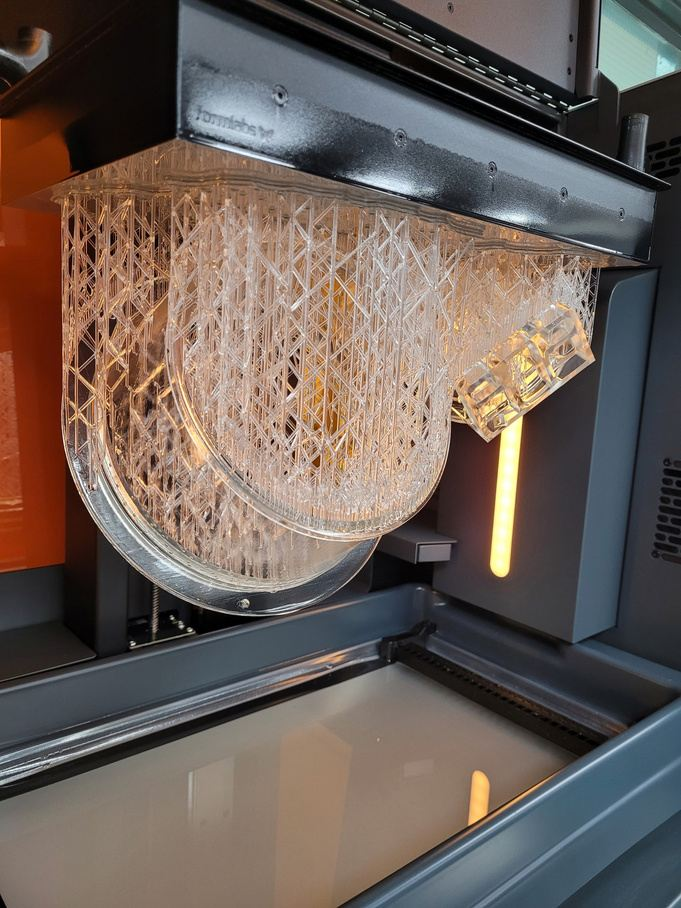
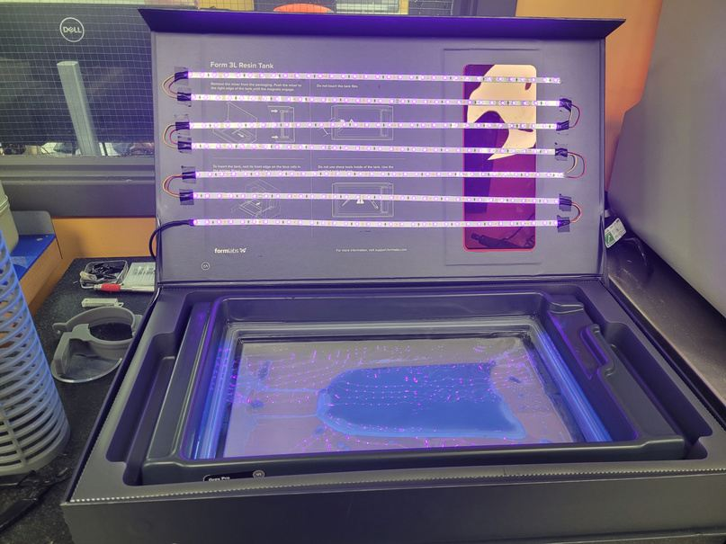
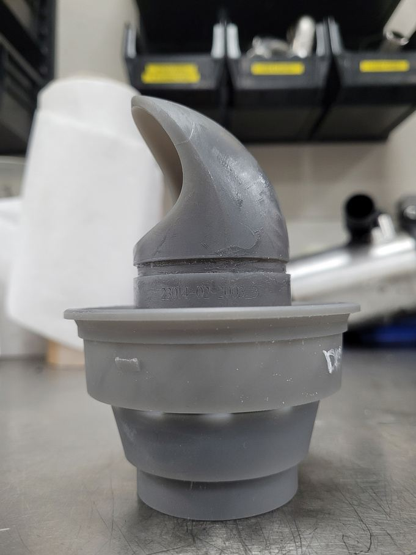
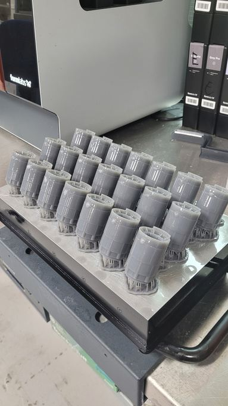
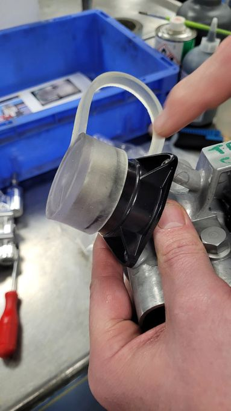
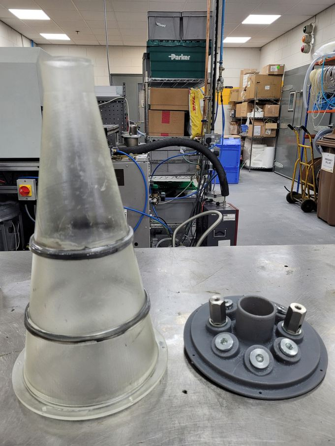
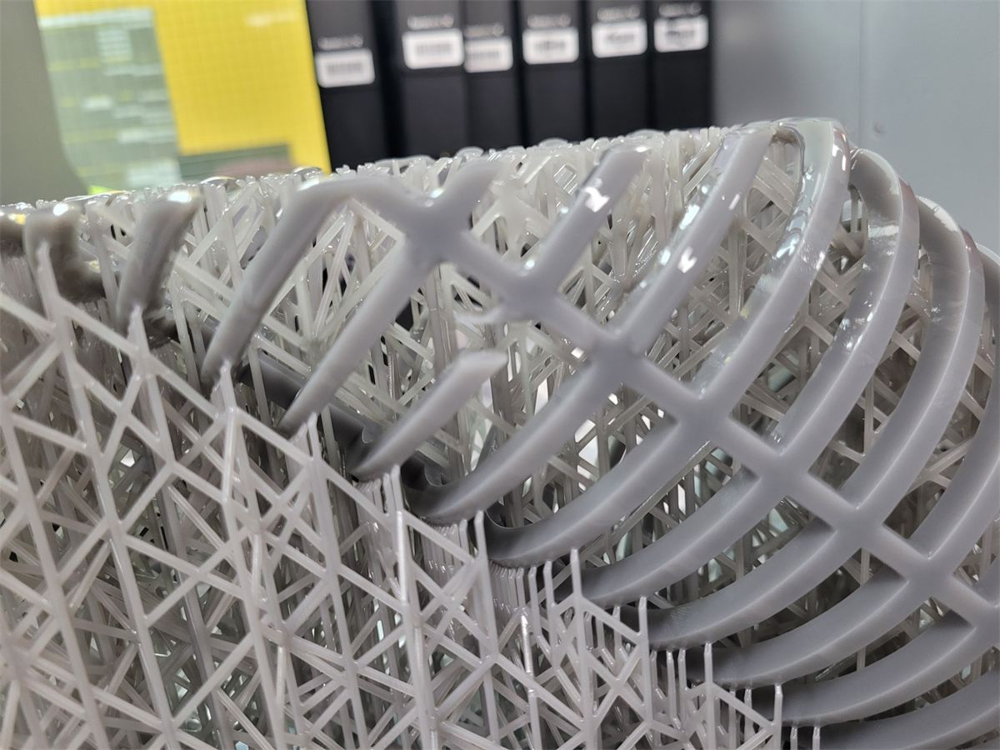
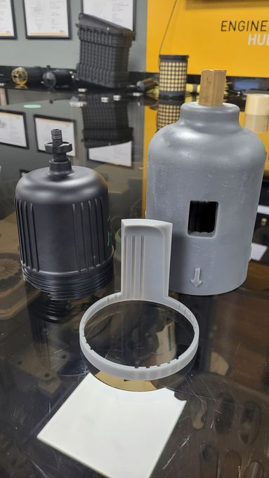
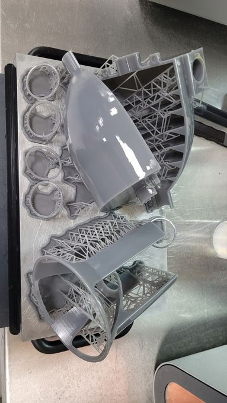
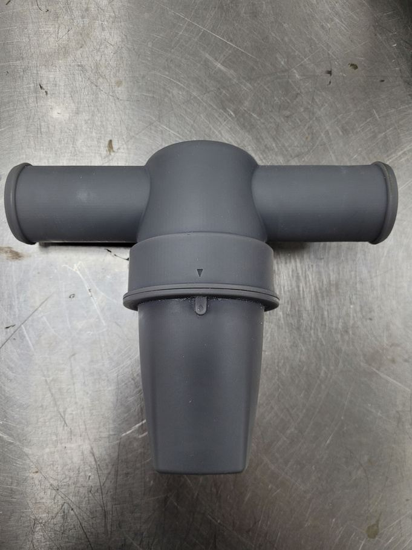

Parker Hannifin · 14 months · SLA and FDM
Cut prototype turnaround to overnight and kept production lines running. I ran the office's SLA and FDM printing for 14 months, completing and documenting more than 165 prints for test rigs, engineering projects and the manufacturing lines.

Speed
Prototypes overnight
Designs went from CAD to a part in hand by the next morning.
Production
Lines kept running
Same-day redesigns and repairs kept manufacturing-line downtime to a minimum.
Volume
165+ prints delivered
Completed and documented in 14 months, including parts for pilot builds.
Process
A print queue that worked
An ordering system that prioritised jobs by urgency, material and finish.
Test rigs, engineering projects and the manufacturing lines all needed printed parts, often urgently, from shared SLA and FDM machines and a wide range of materials.
A broken part on a line meant downtime until a replacement arrived.
Took over SLA and FDM printing operations: running and maintaining the machines, managing materials, and safely handling and disposing of toxic resins.
I built an ordering system that ranked requests by urgency, material and finish, and designed parts myself for test rigs, engineering support and the manufacturing lines, including poka-yoke fixtures.
Engineers got prototypes overnight, in the office, and the lines got same-day redesigns and repairs, keeping downtime to a minimum.
The prints also supported the company's 12-month hydrogen humidification project, including parts for its pilot builds.
| Output | 165+ prints in 14 months |
|---|---|
| Processes | SLA (resin) and FDM (filament) |
| Materials | Grey Pro, Tough and Clear resins, flexible material, PLA, multi-material assemblies |
| Customers | Test rigs, engineering support, manufacturing lines, H2 pilot builds |
| Turnaround | Overnight prototypes, same-day line repairs |
| Responsibilities | Operation, maintenance, materials, toxic resin disposal, job queue, part design |

From the print room
Each job called for a different material and approach, from flexible covers and batch production to reverse engineering and parts with complex internals.








Contact